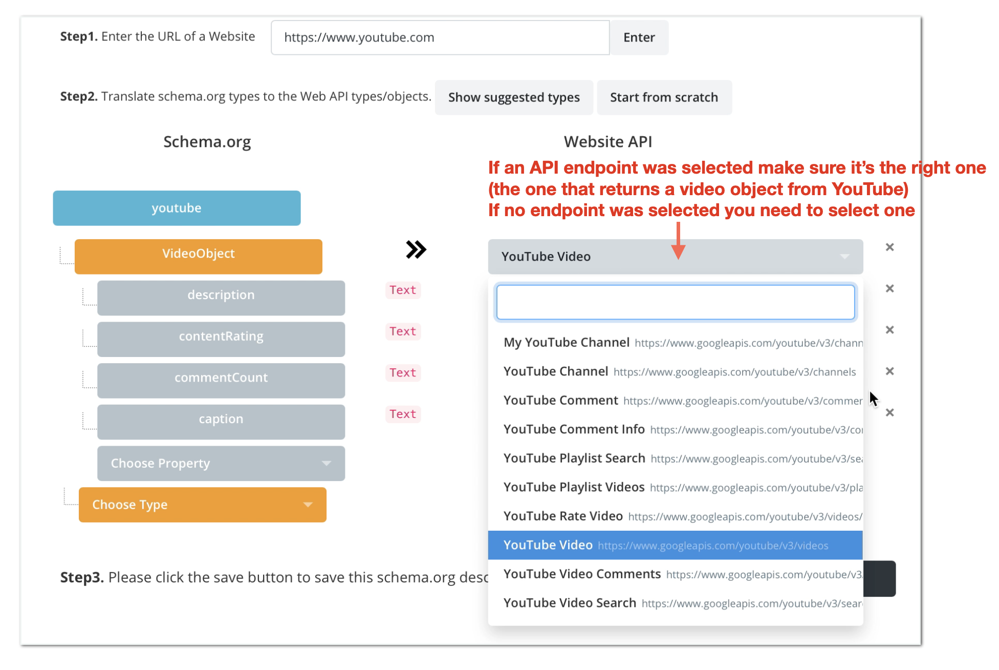
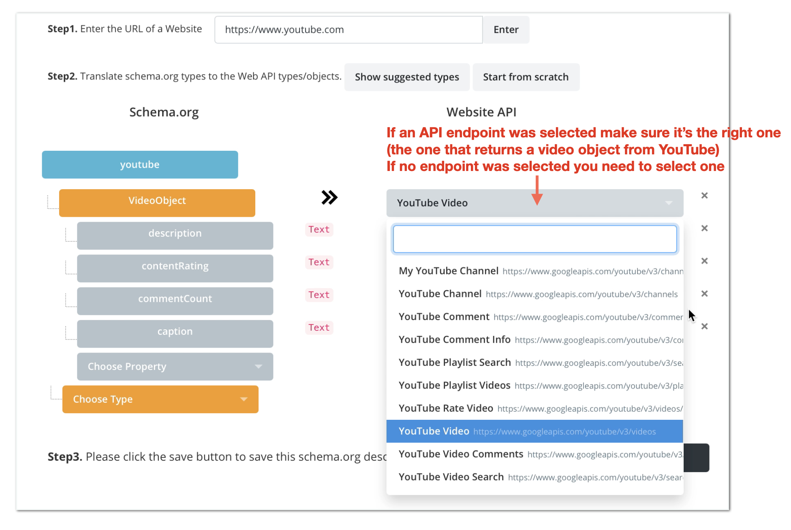
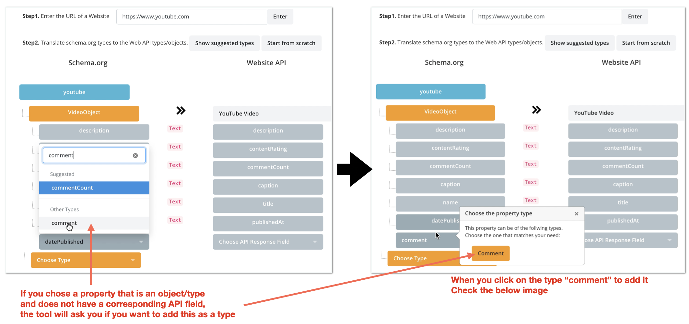
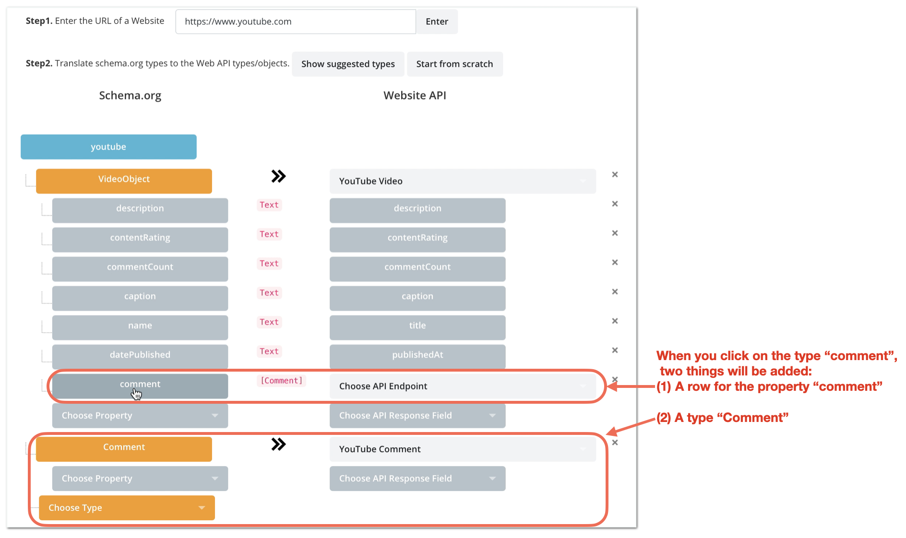
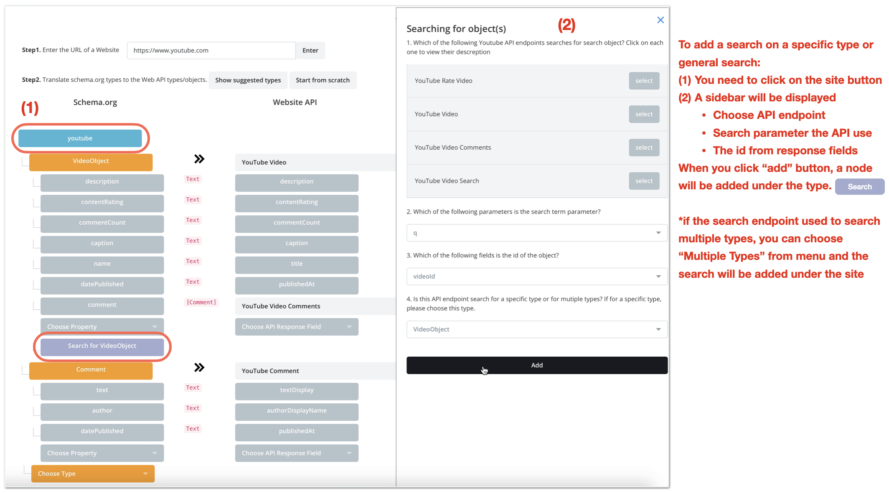
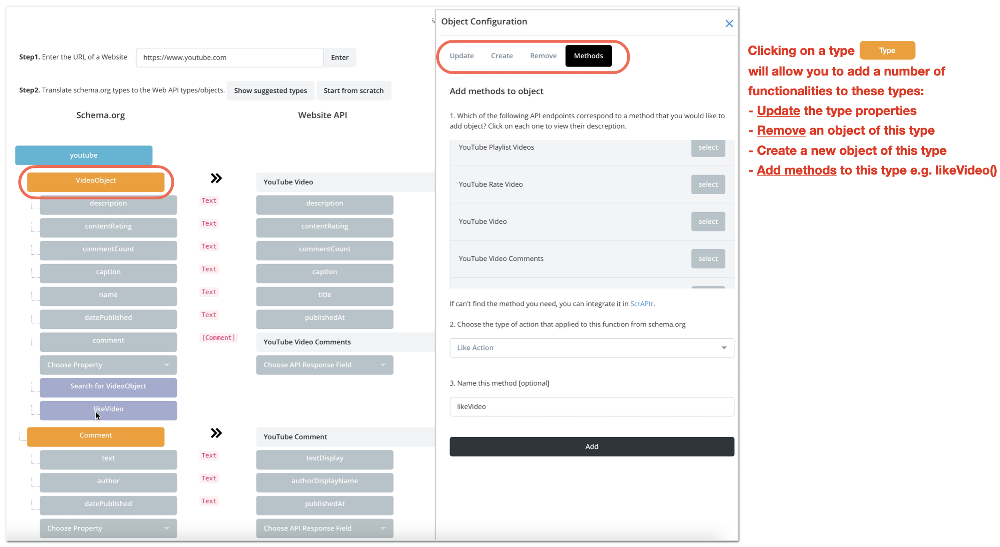

How to use the Shapir UI to translate Web APIs to schema.org vocabulary?
This demonstrates how to translate schema.org types and properties to Web APIs. As an example, we are showing how to tranlslate VideoObject and Comment to YouTube API's video and comment objects. We are also showing how support searching YouTube and applying methods to types.
Remove the types you don't care about from the suggested types. I removed all the types from the suggested descreption and I only kept VideoObject.
Map every type to an API endpoint that get that specific type. For the VideoObject type I chose YouTube Video API endpoint https://www.googleapis.com/youtube/v3/videos)
Under each type, map every property to an API response field
 

Remove the types you don't care about from the suggested types. I removed all the types from the suggested descreption and I only kept VideoObject.
Map every type to an API endpoint that get that specific type. For the VideoObject type I chose YouTube Video API endpoint https://www.googleapis.com/youtube/v3/videos)
When you want to get a property that is an object or a type (e.g. playlits has videos so we choose property video for playit, same with comment for video, etc), then a popover will be displayed asking you to add the type of that property. In this example, I added comment property, an a popover displayed asking me to add the type Comment .
When I clicked on the Comment on the popover, two things were added:
(1) the comment property under the VideoObject and next to it a menu to select the API endpoint (YouTube Video Comments)
(2) The Comment type was added, where I need to to connect to its API endpoint YouTube comment, and choose its properties
To add search to your schema.org descreption. You need to click on the site youtube. In the sidebar, you will need to (1) choose the search API endpoint, if there are multiple one for different types, add the one you're interested in. (2) choose the search keywords parameter for this API endpoint. (3) choose the id field from the response field. (4) finally, choose the type that you're intersted in searching. When you click on the add button, a search either under the type (if the API endpoint can only be used to search for specific type), or under the site (if the API endpoint can be used to search for multiple types)
Click on any type (e.g. VideoObject) to be able to describe how to update this type's properties, create a new object of this type, remove and object of this type, or add a method to this (e.g. like a video method) add search to your schema.org descreption. You need to click on the site . In the sidebar, you will need to (1) choose the search API endpoint, if there are multiple one for different types, add the one you're interested in. (2) choose the search keywords parameter for this API endpoint. (3) choose the id field from the response field. (4) finally, choose the type that you're intersted in searching
